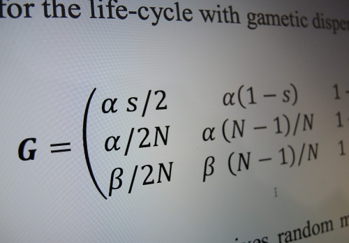
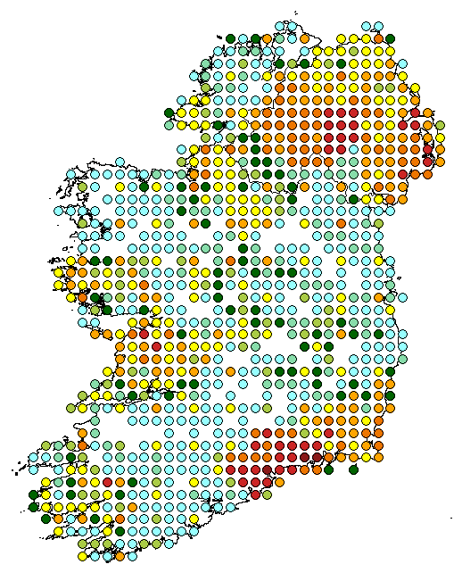

Welcome to Ecological Modelling @ UCD

|
|  |
|  |
We combine ecological data with theoretical models to study ecological processes, such as species dispersal behaviour and the resilience of an ecosystem's functioning.
We have expertise in ecological and evolutionary theory, statistical analysis, data assimilation and computational modelling.